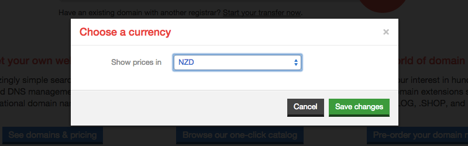
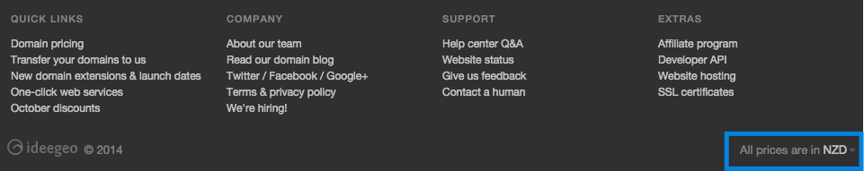

January 16, 2015


Let me start this article by confessing that we’re not SEO gurus at iwantmyname. Everything we’ve done in the last few years in terms of SEO was done with a basic understanding of the topic and by providing a good product with relevant content and landing pages. This always served us well and we were happy with our rankings overall. With that out of the way, I’d like to tell you about our experience with switching our blog to a subdomain.
Read more →
January 7, 2015


From The Name Inspector:
The Name Inspector has been reflecting on last year’s startup names while sipping on what’s left of the apple peel bourbon he made for the holidays. He’s got to say, it seems like some of these companies were named by people who sipped lots of bourbon. Here are some weird names of startups in CrunchBase that were founded in 2014.
I remember when Nirvana (the band) first started getting played on the radio. Most of my friends were really into the music, but all I could think was “I’m pretty sure I have what it takes to sing incomprehensible lyrics, too! I’m definitely going to be a rock star.” And sure, naming your brand is a whole lot different than singing songs, but the message is similar—extreme talent aside, Nirvana was a success because they actually made music. I wasn’t because I was too worried about everything to ever get on stage.
What I’m trying to say, and what a lot of the startups mentioned in the article prove, is that you shouldn’t let branding uncertainty (or even wackiness) prevent you from doing what you want to do. Sure, maybe you think it’s a mistake to name a brand AssessUp or KeeeWeee, but look at all these brands. They exist…they’re real companies with profiles on CrunchBase! You just never know what might become the next big household brand.
Read more →
December 29, 2014
")
There are very few certainties in life—death, taxes, the fact that eggs always taste better with a dash of hot sauce, and that on January 1st, the little numbers in the year will change ever so slightly.
Pre-internet, this wasn’t such a big deal. Sure, you might write the wrong year on a check or document, but it wasn’t an error the world would have to see on a daily basis. Not like on a website, where nearly all the footers in existence—the big footers, small footers, dark footers, and light footers—share one tiny trait. © 2014.
I say “nearly” because every year there are those who forget to manually change the year from one to the next. It’s a bit of a minor tragedy, but entirely understandable. Fortunately, Mikko Järvenpää has your back, with a clever site called updateyourfooter.com.
Read more →
December 24, 2014

The holidays are upon us, and we’d like to thank you all for making 2014 so great. In the last year, we upped our team size to ten, passed the 100,000 domains registered mark (and beyond), added more than 250 new generic top-level domains (gTLDs) to the list, and managed to keep our support satisfaction at 97%. It’s really been incredible—so thank you, thank you, thank you. We can’t say it enough.
Read more →
December 17, 2014

If you’ve been on the iwantmyname website lately, you might’ve noticed a change in parts of the site—a new multicurrency toggle. Now, instead of displaying prices (and accepting payments) in only USD (US Dollar), you can switch currencies to NZD (New Zealand Dollar), GBP (British Pound), AUD (Australian Dollar), and EUR (Euro). It’s a small feature, but one we’re really happy to roll out.
A Little Backstory
For the first half-decade of iwantmyname, implementing multicurrency through our upstream partner was simply too big a project for our team to handle. So, with the majority of our business coming through the US, we began our existence with USD as our payment standard.
But now we’re a bit bigger, and our customers are a bit more spread out, so we’ve officially launched our multicurrency expansion. We quietly launched it a few weeks ago, and we’re really happy with how it’s working (being based in New Zealand, it’s nice to be able to pay in NZD).
So next time you’re looking for a domain, there are three ways to change your currency: in the footer (see screenshot below), on all our price lists (like this one), and in your account payment settings. We’ve also set it up to be location aware, so new customers should automatically be assigned to their correct currency. Once switched, all prices on the site (minus the blog, which is currently static), should reflect the change.

Also, if you have any questions about multicurrency, feel free to ask. We’re always here to help.
December 13, 2014

I grew up in a booming suburb of sorts, and one of my most vivid memories (you can’t choose what sticks!) was of a strange clump of business-centric hotels that popped up just off the freeway near my house. Even to a grade-schooler, the likelihood of all these rooms filling up on a given weekend was extremely low, yet the construction marched on. Knowing the basics of supply and demand, I was baffled, so I asked my dad to explain the logic. He said, “Well… it looks like all the market researchers saw the same opportunity at the same time.”
What I’ve learned since then is that competition is good, but unless the demand is huge, some of the players will inevitably lose out. So here I am, looking at a handful of new generic top-level domains (gTLDs) related to photography, wondering A. why the world needs five extensions for the same purpose, and B. which one(s) will rise to the top.
The “why” question will have to be for a later post, but predicting popularity is a thought exercise I can get behind. So let’s lay out the contenders:
Read more →
December 11, 2014

From the Can I Rank blog:
Keyword domain names were once thought of as a golden ticket to top rankings, but the general consensus in the SEO community seems to be that their power has diminished in the wake of Google’s Exact Match Domain update.
What, if any, role do keyword domains play in SEO today? Is it still worth spending tens of thousands of dollars for a category-defining domain name if it’s not an automatic ticket the front of the line?
Specifically, we want to examine:
- Are keyword domain names still beneficial?
- How much do they help?
- In what ways do they help?
- What is that help worth, in dollar terms?
If you’ve ever gone through the process of naming a website, you’ve probably struggled with this very issue—is it better for business to have your domain name stick to a brand (dominos.com) or a keyword (dominospizza.com)? I’d be the first to tell you not to worry about it—the quality of your product will eventually trump optimization in rankings—but my cavalier mentality might be getting in the way of a very real SEO benefit. Especially if your website is solely focused on a single topic or product.
December 9, 2014

Giving back has always been part of the culture at iwantmyname—from hands-on teaching overseas to supporting our local tech startup scene—but on our 5th birthday we decided to do something a little more permanent. Given that there are only ten of us, our plan of action was to help fund highly efficient aid initiatives that could do so much more for people around the world than we ever could on our own. Our pledge was to give 10 cents from each domain registered to a charity of our choosing, and our first recipient was Save the Children, who was working hard at the time to help the Philippines recover from Typhoon Haiyan (and they’re back on the ground now to help with Typhoon Hagupit).
This year, our plan is to support local initiatives in Bali, an island that was very hospitable to us during our yearly planning meeting. While in Bali, two aid initiatives were brought to our attention—Karuna Bali and IDEP.
Read more →
November 20, 2014

According to ntldstats.com, there are 3,177,772 new generic top-level domains (gTLDs) registered to date. What that says about the overall popularity of the rollout is up for debate, but there’s no denying the success of some of the extensions. .XYZ, .CLUB, and a bunch of the city gTLDs are doing quite well, and even some of the less popular ones (62 at the moment) have broken the 10,000 registrations mark.
But, at least for me, looking at an overall popularity list doesn’t really say anything. I want to know what the people I identify with are using, and for that, I need some specific stats—stats from our customers. Here’s what we found.
Read more →
November 19, 2014

If you talk to the communications manager (or similar position) of a brand of just about any size, you might notice a small tinge of panic in their voice. It’s all just too much. On one hand, communicating with audiences is easier than ever, with seemingly infinite platforms to engage with infinite types of customers. But on the other hand, keeping up with it all while not sounding insane is madness.
Here’s a personal example. Our primary communications goal is to build an authentic brand relationship with our customers. That may sound like an oxymoron, but it’s really not. We’re not looking to be part of your social scene, and we’ll never expect you to wake up every morning pining over what we have to say, but we do hope that when your friends ask for a domain registrar recommendation, you’re confident enough in us steer them our way. And the best way to gain your trust (aside from constantly improving our platform) is to let you in a bit—to show you what we’re focusing on, thinking about, creating, and improving.
Read more →
Older posts


")